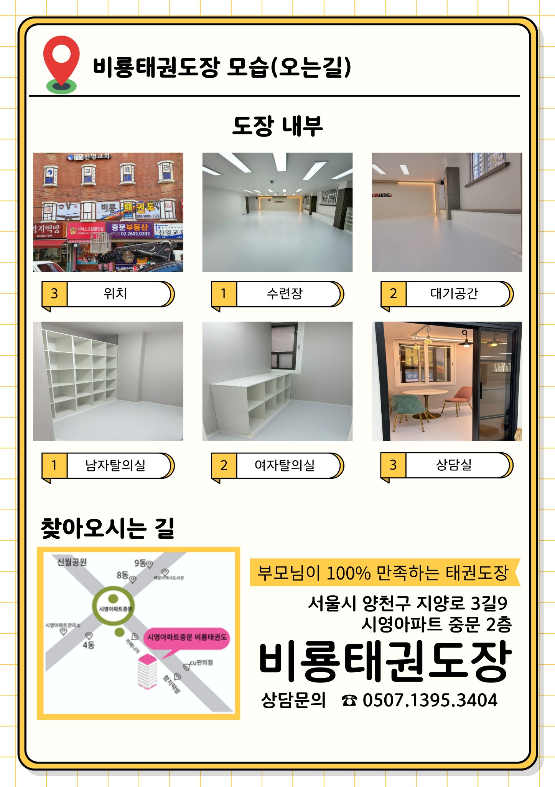
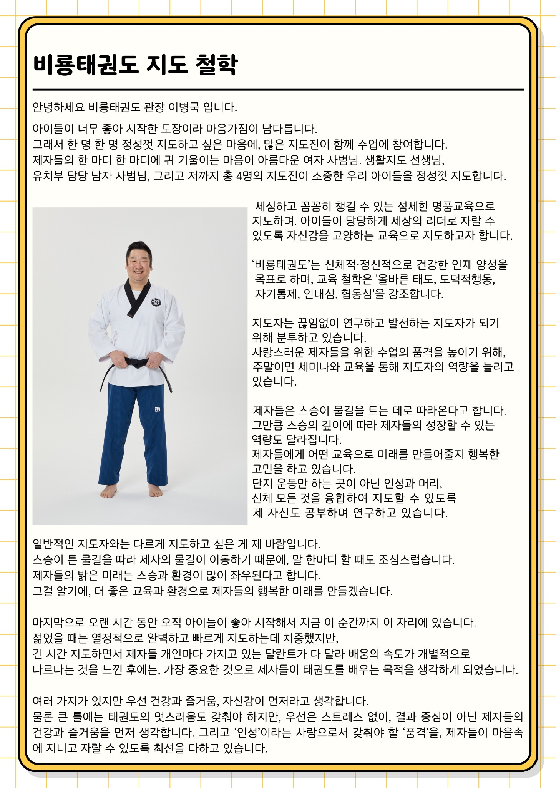

유치부와 초등부,
같은 방식으로 지도하지 않습니다.
나이에 따라 필요한 수업의 속도와 설명, 활동 방식이 다르기 때문입니다.
즐겁게 움직이며 익숙해지는 시간
태권도 기본기와 함께 매주 다양한 유아체육 활동을 경험합니다. 낯을 가리거나 처음 엄마·아빠와 떨어지는 아이도 적응 과정을 세심하게 살핍니다.
기본기부터 스스로 해내는 힘까지
태권도 기본기·품새·발차기와 줄넘기를 체계적으로 익히고, 잘 안될 때 다시 시도하는 경험을 통해 자신감을 쌓도록 지도합니다.

비룡에서 중요하게 보는 것
🥋 태권도다운 기본기
발차기, 기본동작, 공인 품새를 반복하며 정확한 움직임과 집중력을 익힙니다.
🪢 줄넘기와 체력
월·금 줄넘기 전문 수업을 통해 개인 기술과 기초 체력을 함께 키웁니다.
🤸 매주 달라지는 유아체육
다양한 교구와 활동을 활용해 어린 아이들이 즐겁게 움직이며 신체 경험을 넓힙니다.
🌱 다시 해보는 마음
결과만 칭찬하기보다 기다리기, 다시 도전하기, 친구와 함께하는 과정을 중요하게 봅니다.
수련 시간표
아이의 연령과 유치원·학교 일정, 차량 동선을 확인해 적합한 시간대를 상담해드립니다.
| 운동부 | 수련 시간 |
|---|---|
| 1부 | 오후 2:10 ~ 3:00 |
| 2부 | 오후 3:10 ~ 4:00 |
| 3부 | 오후 4:10 ~ 5:00 |
| 4부 | 오후 5:10 ~ 6:00 |
| 5부 | 오후 7:10 ~ 8:00 |
※ 실제 배정 시간은 연령대와 차량 운행 가능 여부 등을 확인한 뒤 안내드립니다.
요일마다 배우는 내용도 다릅니다.
유아체육·학교체육 활동도 연령과 수업 흐름에 맞춰 함께 진행합니다.
관장과 지도진이
가까이에서 함께 봅니다.

관장이 직접 수업에 참여하며 유치부 담당 남자 사범님, 여자 사범님들과 함께 지도합니다. 지도진은 유아 스포츠·유치원 체육 현장의 지도 경험을 수업에 연결하고 있습니다.
처음 상담하실 때
많이 물어보시는 내용
낯을 많이 가리는 아이도 괜찮을까요?
처음부터 바로 잘해야 한다고 생각하지 않습니다. 아이가 지도진과 공간에 익숙해지는 시간을 보고 참여 정도를 조절하며 지도합니다.
어린이집·유치원이나 학교에서 바로 픽업할 수 있나요?
기관·학교 일정과 차량 동선에 따라 상담합니다. 픽업 장소와 인계 방법, 수업 후 귀가 동선까지 함께 확인해 안내드립니다.
줄넘기를 잘 못해도 수업을 따라갈 수 있나요?
현재 수준에 맞춰 개인 기술을 연습합니다. 못하는 동작만 반복시키기보다 작은 성공 경험을 만들며 단계적으로 익히도록 돕습니다.
어떤 시간대에 보내야 하나요?
연령뿐 아니라 함께 운동하는 아이들의 연령대와 생활 동선을 고려해 상담 시 적합한 수업을 안내합니다.
찾아오시는 길
비룡태권도장
서울특별시 양천구 지양로3길 9
시영아파트 중문 인근 · 신영교회 건물 2층